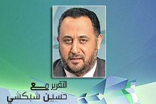

الجديد

التقرير مع حسين شبكشي: نظام العمل وعلاقته بالحوكمة
08/08/2010
التقرير مع حسين شبكشي: نظام العمل وعلاقته بالحوكمة الحوكمة والعولمة نظام العمل وعلاقته بالحوكمة دورات التدريب الخاصة بالأسهم بين النصب والاحتياج الحقيقي من هي الجهة التي تعتمد المدرب؟ اسم البرنامج: التقرير مع حسين شبكشي ، مقدم البرنامج: حسين شبكشي، تاريخ الحلقة: الأحد 22/1/2006 ضيوف الحلقة: المحامي ماجد القاروب (رئيس مركز القانون السعودي للتدريب - الرياض)م. عبد المجيد البطاطي (أمين عام مجلس إدارة البنك الأهلي - جدة)عايد القاسمي (مدير عام صناعة الحياة للتدريب - الرياض)محمد السويدي (مدرب تحليل أسهم - الرياض) حسين شبكشي: السادة والسيدات مشاهدي العربية الكرام السلام عليكم ورحمة الله وبركاته، أرحب بكم في حلقة جديدة من برنامج التقرير مع حسين شبكشي، الحوكمة لفظ جديد بدأ يغزو الخطاب الاقتصادي، وأصبح أحد أهم المعايير المعتمدة لتقييم ومراقبة أداء الأشخاص والشركات حتى الحكومات، ما معنى هذا اللفظ؟ وكيف يطبق على أسواق المال وأداء الشركات في عولمة متغيرة لا ترحم؟ الحوكمة والعولمة هو موضوع قضية اليوم نتابع أولاً كما هي العادة التقرير.قضية اليوم الحوكمة والعولمة عبد الله الركف: هزت الفضائح المالية التي أدت إلى إفلاس العديد من الشركات والبنوك الكبرى على مستوى العالم ثقة المساهمين، وأخذت قضية البحث عن سبل ووسائل للرقابة على أعمال تلك الشركات والبنوك من أجل الحفاظ على حقوق المساهمين، لضمان قيام المؤسسة المالية والاقتصادية بدورها بعيداً عن الفساد المالي والإداري، فخرج ما يعرف بالحوكمة وهو وضع الضوابط ووسائل الرقابة التي تضمن حسن إدارة الشركات بما يحافظ على مصالح الأطراف ذات الصلة بالشركة، ويحدّ من التصرفات غير السليمة للمديرين التنفيذيين فيها، وتفعيل دور مجالس الإدارة بها، بعدما أظهرت الوقائع والأحداث حالات عديدة من التلاعب في أموال العديد من الشركات بواسطة الإدارة أدت إلى إفلاسها، طرأت عوامل جديدة أفرزتها العولمة جعلت الحوكمة تأخذ مكان الصدارة في الاهتمام العالمي، ومن أهم هذه العوامل التغيرات في وضع المساهمين، كان المستثمرون في السابق يشترون أسهم الشركات المحلية، وبالتالي كان من السهل عليهم متابعة أعمال الشركات التي يساهمون فيها، أما في ظل العولمة وما أتاحته من الإمكانية لأي مستثمر أن يشتري أسهماً لأي شركة في أي مكان في العالم، فإنه يصعب عليه متابعة أعمال هذه الشركات بطريقة مباشرة، وبالتالي جاءت الحوكمة لتوفير الحماية للمساهمين، ومن أهم العوامل التي فرضت قضية الحوكمة سيطرة المديرين التنفيذيين على مقدرات الشركة واستغلالها لصالحهم بالدرجة الأولى، وذلك إما لضعف مجالس الإدارة أو بالتواطؤ معهم، والذين يكونوا أعضاؤها من كبار المساهمين، وقد أدى الفساد الذي استشرى في المجال الاقتصادي والمالي إلى سلسلة من الانهيارات وحالات الإفلاس العديدة لكبريات الشركات والمؤسسات في العالم، ومن أبرزها انهيار وإفلاس مؤسسة الادخار والإقراض الأميركية بخسارة قدرت بـ 179 مليار دولار، ومن أجل بناء نظام سليم للحوكمة أو إصلاح نظم الحوكمة القائمة فإن منظمة التعاون الاقتصادية والتنمية قامت بوضع هيكل متكامل لنظام الحوكمة بالمشاركة مع العديد من المنظمات الدولية، وأهم ملامح هيكل نظام الحوكمة الذي وضعته هذه المنظمة تتمثل في العدالة، المسؤولية، المسائلة، والشفافية بين الأطراف المختلفة ذات الصلة بالشركة. لبرنامج التقرير - عبد الله الركف - العربية - الرياض.حسين شبكشي: وللمزيد في هذا الموضوع يسرني أن أستضيف معي هنا في الرياض الأستاذ المحامي ماجد قاروب رئيس مركز القانون السعودي للتدريب، ومن جدة المهندس عبد المجيد البطاطي أمين عام مجلس إدارة البنك الأهلي التجاري، أبدأ أولاً بضيف الأستاذ ماجد قاروب، أستاذ ماجد مرحباً بك معنا في البرنامج.ماجد قاروب: أهلاً وسهلاً بك.حسين شبكشي: أستاذ ماجد تنوون يعني عقد المؤتمر والندوة الأهم من نوعها في موضوع الحوكمة والعولمة عما قريب، إذا حبينا نعرّف كلمة الحوكمة للعامة؟ماجد قاروب: نعم، في الحقيقة أول شيء أنا ما أستطيع أبدأ كلامي في برنامجك إلا بالإشادة بك وبالبرنامج وبطاقم الفريق في هذا العمل، الحوكمة كلفظ في الحقيقة بدأ استخدامه في الفترة الأخيرة بعد ظهور الكثير من المشاكل، وفي المقابل ظهور كثير من الأهمية للشركات المساهمة العامة، على اعتبار إنه الحوكمة هو القيد الذي يعطي الطمأنينة وصمام الأمان للجميع، سواء كان مجالس إدارات وأعضائها وصلاحياتهم، مساهمين وحقوق المساهمين اللي همّ عامة المجتمع البعيدين عن الإدارة، ولكن يرغبوا في الاطمئنان على أن هذه الأعمال تتم ضمن حاكمية أو سيطرة للقانون على الأفراد، في نفس الوقت إعطائها الأفراد القدرة والصلاحيات للعمل وتحقيق الغايات والأهداف، على اعتبار أن ما يقوموا به من أعمال يؤثر على حقوق الملاك والمساهمين، وأيضاً يؤثر على الاقتصاد أو الاقتصاديات الوطنية.حسين شبكشي: كلمة الحوكمة تعطي القوة لمين؟ماجد قاروب: للجميع ولقوة القانون، ولمنفذي السياسات داخل الشركات أو المنظمات أو المؤسسات.حسين شبكشي: أو الحكومات؟ماجد قاروب: أو الحكومات نعم..حسين شبكشي: باعتبار الوزارات قد تكون إحدى الجهات المعنية أو الهيئات المنبثقة من الحكومات.ماجد قاروب: الفكرة تنصب على أن يكون السيادة للقانون، وهناك صلاحيات مطلقة ومقننة للقائمين على الإدارة، بحيث إنه المسألة لا تخرج إلى الأهواء ولكن ضمن صلاحيات وحدود واضحة ومعروفة للجميع مسبقاً.حسين شبكشي: مفهوم الحوكمة من خلال ندوتكم القادمة الحوكمة والعولمة من الواضح إنه هناك ما بين السطور معنى إنه الحوكمة هذه أصبح معناها عالمي؟ماجد قاروب: نعم في الحقيقة الاقتصاد..حسين شبكشي: كما هو حوكمة في هونغ كونغ يكون حوكمة في تشيلي ويكون حوكمة في السعودية ويكون حوكمة في باريس..ماجد قاروب: بطبيعة الحال الفكرة واحدة وتختلف في التطبيقات الداخلية المحلية، ولكن يجب أن يكون هناك قوانين تحكم تصرفات القائمين على الإدارة، وموضوع الندوة اللي هو الحوكمة والعولمة أصبح الآن الاقتصاد مطالب بمزيد من التقنين، وتصادف ذلك مع دخولنا المبارك إن شاء الله إلى منظمة التجارة العالمية بما يعني هناك تحديات أخرى إلى هذه العملية، ولذلك وضعنا الشركات العالية والمساهمة التي تمثل ما يقارب 95% من الاقتصاد الوطني تحت هذا السندان والمطرقة وهي الحوكمة وما يتطلبها من تطوير آليات العمل والمفاهيم والأشخاص وتدريبهم وتوظيفهم، بحيث إن المسألة تكون مسألة دقيقة جداً في المعايير لا يوجد فيها مجال للمحسوبية للمجاملات للأخذ والعطاء، فيها فصل ما بين المصالح الشخصية والعامة، هناك الكثير من المصالح التي تتحكم في موضوع الحوكمة، ويزيد عليها أيضاً تحديات الإدارة في مواجهة العولمة وتحدياتها لأنه بدون إدارة صحيحة سليمة للدولة وأجهزتها والقطاع الخاص ومؤسساته لن نستطيع أن نحقق نجاحات تُذكر في العولمة، ولذلك الاقتصاد الوطني الآن موضوع تحت هذه الكماشتين الحوكمة والعولمة، ولذلك كان اختيار الموضوع بهذا السبب.حسين شبكشي: أنتقل الآن إلى ضيفي من جدة المهندس عبد المجيد البطاطي، مهندس عبد المجيد مرحباً بك معنا في البرنامج.عبد المجيد البطاطي: أهلاً وسهلاً.حسين شبكشي: أستاذ عبد المجيد لك إصدار مهم في هذا الموضوع وأنا يهمني يعني أثير معك نقطة أين تكمن الفواصل والحدود ما بين السيادة للدولة الواحدة وما بين منظومة العولمة التي ينطلق منها مفهوم الحوكمة؟عبد المجيد البطاطي: بسم الله الرحمن الرحيم الحمد لله والصلاة على رسول الله، أولاً أشكركم على استضافتي في هذا البرنامج الجيد، والمشهود له بالبرنامج الجيد إن شاء الله من جميع المشاهدين، برنامج الحوكمة في حد ذاتها ليست اسماً ثابتاً أو معروفاً في اللغة العربية كحوكمة أو كحاكمية، وفي الواقع لا يُفتى في القانون وماجد في البرنامج، ولكن أحب أن أضيف إضافة إنه اللفظة الجديدة اللي استحدثت حديثاً في العالم الغربي وربما أميركا بالذات، بدأت من هناك انطلاقتها، هي مجموعة من الأنظمة وليس نظام واحد، مجموعة كبيرة من الأنظمة تضبط العمليات في الشركة، تضبط سلوك الموظفين، تضبط الصلاحيات، تكون فيها شفافية كاملة، تحمي حقوق المساهمين الصغار قبل الكبار، فبالتالي نجد إنه مصادر هذه النظم مجموعها عبارة عن 3 مصادر رئيسية، هي نظام الشركة التأسيسي الذي أُسس عليها الشركة والتي بنى عليها المساهمين اتفاقيتهم، الجانب الآخر هو القانون المحلي الذي تضبطه سواء كانت وزارة التجارة أو المؤسسات الأخرى التي ترتبط بها مثل مؤسسة النقد السعودي مثلاً في المملكة وخصوصاً البنوك..حسين شبكشي: وكل هذه القوانين سيدي يجب أن تتناغم مع منظمة التجارة العالمية على سبيل المثال؟عبد المجيد البطاطي: يجب أن تتناغم مع منظمة التجارة العالمية نعم، لأنه المصدر الثالث لهذه الأنظمة هي النظم العالمية وهي عبارة عن 12 مصدر تقريباً من المصادر اللي تضبط مجموعة القوانين والنظم، وتستنبط نظم الشركات مع نظم مؤسسة النقد أو الجمعية السعودية للمهندسين هذه العملية، فهي عبارة عن مجموعة معايير ومجموعة نظم إدارية يُطلق عليها البعض الانضباطية الإدارية بين الشركات، تبدأ من مجلس الإدارة وتنطلق إلى حد اللجان والجمعيات..حسين شبكشي: خليني أطرح معك مثال دائماً باعتبار أنت تعمل في القطاع المصرفي يعني هناك دول تتميز بأنظمتها الخاصة، وأضع بين هلالين كلمة الخاصة بين قوسين سرية المصارف، كيف تتعامل دول كسويسرا وجزر الكاريبيان على سبيل المثال التي لديها حصانة مصرفية كبيرة جداً وتميز في هذا الأمر مع ضروريات المكاشفة والمفاصحة المطلوبة في القوانين الجديدة التي تخص موضوع الحوكمة؟عبد المجيد البطاطي: لو نظرنا إلى جانب معين مهم في هذا الجانب بالذات، وهو جانب آلية العمل في التحويلات المصرفية، يمكن لو نظرت للبحث اللي كتبت فيه أدرجت جزء أو كسر معين من فصل خاص بالعمليات التحويلية اللي تتكلم في عملية وضوحها بالكامل والشفافية فيها، لأنه لا بد من ضبط عملية هذه التحويلات حتى لا تدخل في عملية غسيل الأموال أو في العمليات الإرهابية.حسين شبكشي: جميل، أنتقل الآن إلى ضيفي هنا في الاستديو الأستاذ ماجد قاروب، أستاذ ماجد إجابة باختصار قبل فاصل سيدي الآن يعني المرجعية القانونية إذا أردنا أن يكون حكم القانون هو الأساس ولكن كلمة مبهمة قانون من؟ وأين؟ماجد قاروب: خليني أعطي لك مثال لإكمال ما بدءه المهندس عبد المجيد البطاطي، إذا تحدثنا مثلاً عن حاكمية الشركات المساهمة العاملة في نشاط التأمين، إذا نحن نتحدث بالتفصيل عن بالتفصيل عن قانون الشركات باعتبار أنها شركة وعقد تأسيس الشركة باعتباره اتفاق ما بين الشركاء، ومن ثم نأتي إلى نظام مراقبة شركات التأمين التعاوني باعتبار إن نشاط الشركة في مجال التأمين، ثم نأتي إلى نظام العمل على سبيل المثال باعتباره يحكم العلاقات التعاقدية ما بين الموظفين وأعمالهم، ويحدد تخصصاتهم، ومن ثم نأتي إلى نظام السجل التجاري باعتباره إنه يخص هذه المسألة، وبالتالي هذه حزمة تخص كل الشركات بشكل كبير ومفصل.حسين شبكشي: جميل، فاصل قصير نعود من بعده لاستئناف الحوار ابقوا معنا.[فاصل إعلاني]حسين شبكشي: من جديد أواصل حواري وأرحب بكم، وأنتقل إلى ضيفي هنا في الاستديو الأستاذ ماجد قاروب، أستاذ ماجد الإصدارات الفنية والأدبية في موضوع الحوكمة والعولمة لا تزال نادرة جداً باللغة العربية وما زال الاعتماد أكثر على المصادر الغربية؟ماجد قاروب: في الواقع صحيح، وبالمناسبة يجب كواجب مهني أني أنا أشيد بالكتاب اللي أصدره الأستاذ عبد المجيد البطاطي أو المهندس عبد المجيد البطاطي، لأنه في الحقيقة كان خلاصة مراجع علمية كبيرة جداً محلية وعربية ضئيلة، ولكن الترجمة للكتب الأجنبية الكبيرة اللي اشتغل عليها أنا شخصياً أعتبر كتابه مرجعية، وهذا الكتاب يعكس مكانته العلمية والشخصية أيضاً إلى.. والبنك الأهلي بالمناسب اللي هو تبنى دعم وتشجيع إصداره لهذا الكتاب. نظام العمل وعلاقته بالحوكمة حسين شبكشي: على ذكر البنك الأهلي هل هناك مؤسسات سواء خاصة أو عامة في العالم العربي تتبع منظومة الحوكمة في عملها؟ ومن هي أبرزها؟ماجد قاروب: هي في الحقيقة موضوع الحوكمة هي ممارسة، لا يوجد مثلاً كتاب أو قانون يسمى الحوكمة ولكن هي إجمالي الممارسة التي يرغب المشرع والمنظم في كل دولة على أن يطمئن إلى سلامة الأعمال محلياً وخارجياً، على سبيل المثال مثلاً إذا تحدثنا عن نظام العمل إيش علاقته بالحوكمة، يجب أن تكون عقود العمل مقننة واضحة صريحة أعطيك مثال بسيط جداً لأهمية نظام العمل في ظل موضوع الشركات المساهمة، عقود العمل القديمة كلها مختصرة بسيطة لا تنم عن الواقع، ولكن اليوم هناك مسؤولية للموظف المطلّع، الشخص المختص، صاحب المعلومة المطلعة على المعلومة، هذا يرتب أضرار وخسائر والتزامات عليه وعلى الشركة التي يعمل فيها، هذا يؤدي ويحتم بالضرورة إلى تعديل مفهوم خطأ الموظف الذي يعاقب عليه في النظام، إذا وجدنا إلى نظام العمل الحالي بالرغم من تجديده لا يصل إلى هذه المرحلة المتقدمة من الأنظمة، ولذلك زي ما تفضل المهندس عبد المجيد يجب أن تتطور الأنظمة حتى توائم المتطلبات الحالية والدولية في نفس الوقت مع بعض، ننظر إلى موضوع الإدارات القانونية وأهميتها داخل المؤسسات، يجب أن تكون إدارات قانونية مؤهلة مستقلة تستطيع أن تقدم رأي قانوني يُلزم أعضاء مجالس الإدارة لا يُنظر إلى مستشار في داخل الإدارة القانونية على أنه أحد موظفي الشركة، وبالتالي موقعه في الهيكل الإداري في ظل ما يطلق عليه الحوكمة والعولمة وأهميتها يجب أن يكون مستقل ويتبع مباشرة إلى القيادات العليا، وأقرب إلى ما يكون إلى مجالس الإدارات، هذا هو الوضع الذي يجب أن تكون عليه الشركات، للأسف إذا نظرنا إلى تطبيق هذا الأمر على واقع الهيكل الإداري للشركات المساهمة السعودية نجد إنه في معظمها لا ينطبق عليها ولا قدر بسيط من هذه المسألة ولذلك يجب تعزيز وتكريس شرح هذا لمفهوم للشركات حتى تكون قادرة ومؤهلة إنها تحمي نفسها والملاك وأعضاء مجالس الإدارات وكبار التنفيذيين عليهم أن يسعوا إلى حماية أنفسهم من القضايا التي قد تثار ضدهم بسبب سوء الإدارة.حسين شبكشي: أنتقل إلى جدة الآن لضيفي المهندس عبد المجيد البطاطي، مهندس عبد المجيد هل هناك معايير عالمية معروفة ومعمول بها لتقييم مدى حوكمة شركة أو حوكمة وزارة أو حوكمة هيئة مقارنة بغيرها؟عبد المجيد البطاطي: نعم أولاً كلمة حوكمة أحب أضيف فيها إضافة بسيطة جداً، مجمع اللغة العربية في الأردن يميلون إلى تسميها بالحاكمية المؤسسية، والحوكمة والحاكمية هي كلها كلمات جديدة بالنسبة للغة العربية..حسين شبكشي: هي كلها زي الخصخصة والخوصصة يعني هذه أمور..عبد المجيد البطاطي: بالضبط على سبيل المثال المعايير المحاسبية هي جزء من نظم الحوكمة أو الحاكمية المؤسسية في الشركة، وجود مجلس الإدارة هو أيضاً جزء نظام متمم لعملية الحاكمية المؤسسية، وجود آلية عمل للمجلس الإدارة أيضاً يعتبر جزء من هذا النظام، كما ذكر أخي الأستاذ ماجد عقود العمل هي أيضاً جزء، السلوك العامل الموظفين باعتباره آلية ويسموها دليل الحاكمية أيضاً..حسين شبكشي: طبعاً هنا سيدي لا نقصد فقط لما أشار الأستاذ ماجد وأشرتم الآن إلى موضوع أنظمة العمل لا نشير فقط إلى العلاقة التعاقدية ما بين الموظف والشركة، هناك عقود عمل من الباطن عندما تعقد الشركات صفقات لإنتاج بعض الشركات فتستعين بأطفال أو تستعين بنساء يدفعون لهم أجور أقل، هذا نوع من الإجحاف يعني أنت تقصد العمل بمفهومه الشمولي وليس فقط بالمفهوم التعاقدي؟عبد المجيد البطاطي: نعم المفهوم الشمولي والتعاقدي، لأنه فيه عمليات وقوانين تضبط العلاقة بين العامل وصاحب العمل، وهذه العلاقة تبين فيها سلوكيات هذا العامل وسلوكيات المؤسسة تجاه العامل، فهي أشياء مشتركة بين الاثنين ومصالح مشتركة فيها شفافية كاملة، فيها وضوح كامل في الرؤية، فيها حفظ لحقوق العامل زي ما فيها حفظ لحقوق المؤسسة، أيضاً حفظ لحقوق المشاركين والمساهمين، هذه المعايير كلها بتواجدها كاملة في المؤسسة هي لا تنطبق جميع المعايير على جميع المؤسسات، ولكن في معظمها ما ينطبق منها على المؤسسات ممكن عندها أن تقيّم أن هذه المؤسسة منضبطة أو غير منضبطة، كأنه على سبيل المثال من المؤسسات المالية إذا لم يكن لديها سجلات واضحة عن التحويلات المالية مع بيانات كاملة عن المحول والمحول إليه فهي شركة غير منضبطة ببعض آليات التحويلات الدولية.حسين شبكشي: أنتقل الآن إلى ضيفي هنا الأستاذ ماجد قاروب في الاستديو، أستاذ ماجد اهتميت أنت شخصياً منذ فترة ليست بقليلة بموضوع مدى تطبيق الحوكمة في الشركات المساهمة السعودية، وكتبت فيها أكثر من مقال، وأجريت فيها أكثر من ندوة، باعتقادك الآن ما هو التحدي أمام هيئة السوق المالية من جهة كجهة مشرفة والشركات السعودية التي يتزايد عددها في السوق يعني إذا لم ينظروا لموضوع الحوكمة نظرة جادة النتيجة ماذا؟ماجد قاروب: والله النتيجة مأساوية..حسين شبكشي: كيف؟ماجد قاروب: المشكلة الكبرى اللي يعاني منها سوق الأسهم السعودي هو التضخم الكبير في الأسعار، وبالتالي إغفال الجميع عن ما يجب النظر إليه، إذا حولنا الحديث ونحن نتحدث عن أسعار حقيقية ليست مبالغ فيها أو مضخمة، عدم تحكّم المقامرين المضاربين في السوق، اعتلاء ثقافة المجتمع في التداول الأسهم، سنصل إلى الحديث عن هذه المعايير بكل دقة وشفافية، المدير يجب أن يكون مدير يهمه موقعه لأنه تأثير السهم صعوداً أو نزولاً يرتبط بشخص المدير والإدارة والأعمال والمشاريع، سمعنا مثلاً عن صافولا شاركت بحصة ضخمة في مشروع مدينة الملك عبد الله الاقتصادية العملاقة لم يؤثر على السهم بشكل واضح، ونفس الشيء شركة عسير، هذا الحدث لو تم في سوق آخر كنا وجدنا تغييرات على سعر الأسهم إيجابية، كنا وجدنا ازدياد قيمة سعر الإدارة الاحترافية بحيث إنها تطلبهم شركات أكبر وأعظم، وتديهم مزايا أفضل باعتبار إنهم هم يحققوا أهداف تنعكس على الأسهم وسعرها، لم نجد من الشركات المساهمة الكبرى باستثناء سابك في ينساب فقط أعطت موظفيها جزء من الأسهم، وبالتالي لم تربطهم بحاكمية الأعمال، وبالتالي ينظروا إليها أنها وظيفة عادية وليست وظيفة مرتبطة بأعمال، والمؤشر الحقيقي لنجاعة أعمالهم وإدارتهم هو سعر السهم في السوق صعوداً أو نزولاً.حسين شبكشي: جميل، في الختام لا يسعني سوى أن أشكر ضيوفي كان معي من الرياض هنا الأستاذ المحامي ماجد قاروب مدير مركز القانون السعودي للتدريب، وكان معي من جدة المهندس عبد المجيد البطاطي أمين عام مجلس إدارة البنك الأهلي التجاري، فاصل قصير نعود من بعده لمتابعة البرنامج ابقوا معنا.[فاصل إعلاني]حسين شبكشي: مرحباً بكم من جديد، السوق المالية والاهتمام المتزايد بها أحدث ثورة في الخدمات المساندة المقدمة، وولدت العديد من الخدمات والسلع المتعلقة بهذه السوق المالية، ولعل من أهم تلك الخدمات المقدمة هي دورات تدريب لسوق الأسهم، وأصبحت كل صحف الخليج والسعودية تحديداً لا تخلو إلا عن صفحة ربع صفحة تقدم هذه الخدمة بإعلان مغري جداً عنها، هذه الدورات ما بين النصب وما بين الاحتياج الحقيقي هذا هو موضوع الملف الساخن نتابع أولاً كما هي العادة التقرير:الملف الساخن دورات التدريب الخاصة بالأسهم بين النصب والاحتياج الحقيقي محمد العيدان: في السعودية اليوم اهتمام بسوق الأسهم يأتي في المرتبة الأولى، كما للأندية الرياضية مشجعيها فإن للشركات المساهمة أيضاً متابعون ومهوسون لتحركاتها.عبد الله دخل حديثاً إلى السوق إلا إنه فضل أن يلتحق بدورة في مراكز التدريب الخاصة بالأسهم المنتشرة في البلاد، ليعرف فك تلاصم هذا السوق الساحر.- والله مشكلتها التفاوت في الأسعار، الشيء ثاني إنه ما تدري ويش المركز الجيد ويش المركز اللي مو جيد، لأنه ما في معايير خاصة للموضوع هذا.محمد العيدان: هذا الاهتمام بسوق الأسهم دفع المستثمرين إلى إقامة مراكز التدريب وتعليم الأسهم، البعض يرى أن كثيراً منها تقدم دروساً مفيدة للمتعاملين الجدد، فيما ذهب البعض الآخر إلى استغلال هذا العشق للأسهم بإحضار مدربين ومتعاملين دون المستوى والغرض فقط جميع الأموال.- بعض المراكز تقدم في فنادق تحسب تكلفة الفندق تحسب تكلفة المدرب، المدرب إذا كانوا يقدمون طبعاً أكاديمي كبير طبعاً لازم يطلب نسبة أعلى، برضه لازم يتطلب السعر الأعلى.محمد العيدان: هناك انتقادات تجاه بعض المراكز بأنها لا تخدم التدريب وتقدم دورات من قبل أشخاص غير مؤهلين، فضلاً عن الأسعار المرتفعة لرسوم التدريب والتي تتراوح ما بين 1500 و7000.- المراكز التجارية وطبيعي أن نسعى إلى الربح، لكن أيضاً إحنا في سوق مفتوح بمعنى أن وجود مراكز عديدة وكثيرة سيجعل المنافسة فيها مفتوحة.محمد العيدان: مراكز تدريب الأسهم في السعودية بحاجة إلى التنظيم وأيضاً جهات رقابية مثل هيئة سوق المال مع تنامي سوق الأسهم السعودي.من هنا يتخرج متعاملوا سوق الأسهم الأكبر في الشرق الأوسط، ورغم انتشار هذه المراكز وتعددها إلى أن الفائدة متفاوتة من مركز إلى آخر. لبرنامج التقرير – محمد العيدان – العربية – الرياض.حسين شبكشي: وللمزيد في هذا الموضوع يسرني أن أرحب معي بضيوفي هنا في الاستديو الأستاذ عايد القاسمي مدير مركز صناعة الحياة للتدريب، بالرياض وكذلك محمد السويد وهو مدرب تحليل فني متخصص للأسهم، أبدأ أولاً بضيفي الأستاذ عايد، أستاذ عايد مرحباً بك معنا في البرنامج.عايد القاسمي: أهلاً وسهلاً.حسين شبكشي: حجم سوق التدريب الخاص بالأسهم كبير في السوق السعودي؟عايد القاسمي: والله حجم سوق الأسهم طبعاً حجم كبير، وطبعاً عدد المتدربين اللي تم تدريبهم في سوق الأسهم حتى الآن تقريباًَ مثلاً 2% بس عدد المستثمرين في سوق الأسهم هو 2.5% معناها عدد المتدربين قليل، والطلب إلى الآن هو عاليحسين شبكشي: 2.5% من كم؟عايد القاسمي: من عدد المستثمرين في السوق.حسين شبكشي: 2.5% تم تدريبهم في مراكز التدريب، كم عدد مراكز التدريب الموجودة اليوم؟عايد القاسمي: والله تقريباً بحدود 25 مركز تدريبي.حسين شبكشي: منتشرة في مدن المملكة كلها؟عايد القاسمي: طبعاً موجود في الرياض وجدة والدمام هذه كمناطق أساسية، وموجود في بعض القرى أو بعض المناطق مثل أبها حائل مراكز قليلة، لكن المراكز الكبرى الموجودة في الرياض غالباً هي تغطي المناطق الصغيرة.حسين شبكشي: من الذي يرخص لهذه المراكز؟ مرجعية هذه المراكز أي جهة؟عايد القاسمي: طبعاً اللي رخص المراكز هو التعليم الفني والتدريب المهني المؤسسة العامة للتدريب الفني والتدريب المهني.حسين شبكشي: هل هناك تنسيق مع هيئة السوق المالية أو الغرف التجارية على سبيل المثال؟عايد القاسمي: والله لا يوجد أي تنسيق حالياً، يعني حالياً لا يوجد أي تنسيق.حسين شبكشي: طريقة التسعير للدورات كيف تتم؟عايد القاسمي: طريقة التسعير للدورات تعتمد على اللي هو المدرب، هل هو مدرب محترف، طبعاً هذه نقطة مهمة جداً. والمكان اللي يقدم فيه الدورة التدريبية، المادة التدريبية المقدمة تعتمد هل هي تحليل أساسي أم تحليل فني، بناء عليها يتم تسعير الدورة.حسين شبكشي: أنتقل الآن إلى ضيفي الأستاذ محمد، أستاذ محمد كيف يتم تقييم المدربين باعتبارك أنت مدرب متخصص؟محمد السويدي: والله أعتقد إذا كنت تتكلم من منطق الأشخاص اللي يلتحقون بدورات تدريبية يمكن أفضل وسيلة، كيف البداية يمكن يقيم فيها مدربين يحاول يبحث عن إنتاج مدربين أنفسهم، هل لهم أي تحليلات أي وجهات نظر؟ هل هم يعني أي استخدامات للأشياء اللي هم قاعدين يدربونها ويعلمونها للناس؟ الشيء الثاني المحتوى، محتوى الدورة أيضاً يمكن يكون مهم جداً لأنه يدخل في ضمن المقاييس في اختيار..حسين شبكشي: هل هناك نموذج جاهز يتم استيراده من الغرب أو من الشرق على سبيل المثال ومن ثم تعريبه للمتدربين؟ أم أن هناك نموذج خاص بسوق الأسهم السعودي فعلاً؟محمد السويدي: إحنا فعلاً يتمنى الواحد يكون فيه قالب خاص أو جاهز ممكن الواحد يطبقه يشتغلون فيه الناس كلهم، لأنه الموضوع جداً مطاط شوي، ويختلف على حسب حاجة المتدرب نفسه، بالنسبة للموجود عند الغرب يمكن إحنا نستفيد منه اللي هي تجاربهم السابقة، لأنه لهم أكثر الأسواق الغربية أكثر 200 سنة، فممكن نستفيد من التجارب اللي همّ مروا فيها في استخدام النظريات والمواضيع أو الأدوات اللي يستخدمونها حالياً في التحليل.حسين شبكشي: هل هناك مدرسة معينة يتم الاعتماد عليها المدرسة اليابانية أو المدرسة الأميركية أو المدرسة الإنجليزية في التدريب؟محمد السويدي: سؤال جداً جميل، فيه عدة مدارس صحيح، حتى داخل المدرسة في عدة أيضاً مدارس ونظريات، لكن المشهور حالياً هي أدوات أو مدرسة العالم الغربي، أتكلم فيها عن أوروبا وأميركا، فيه طبعاَ أنا طبعاً أتكلم من منطق التحليل الفني هذا اللي أدربه طبعاً، وفيه طبعاً أيضاً المدرسة اليابانية، لكن أيضاً داخل المدرسة الأميركية..حسين شبكشي: بس المتابعة هنا أكثر شيء الأميركي؟محمد السويدي: نعم وفي العالم كله مو فقط..حسين شبكشي: جميل أنتقل مرة أخرى إلى ضيفي الأستاذ عايد القاسمي، أستاذ عايد الانتشار الكبير لمراكز تدريب كما تفضلت وذكرت يجعل طبعاً مناخ المنافسة شديد جداً، هل هناك تقييم لتلك المراكز وتصنيف لها، تصنيف فئة أ فئة ب فئة ج؟عايد القاسمي: لا يوجد يعني جهة معينة تقوم بالتقييم، لكن هناك تقييم ذاتي من مراكز تدريب، كل مركز تدريب يقوم بتقييم السوق على حسب اعتقادي، فهناك طبعاً فيه مراكز كأي سوق عالمي فيه مراكز أ مراكز ب مراكز ج، ومراكز ممكن يأخذون ي.حسين شبكشي: مراكز يمكن يأخذون ي يفتح مجال طبعاً لموضوع يعني اسمي كلمة الاحتيال أو قد يكون الاستغلال لظرف الناس عندها نهم عالي جداً للإقبال على هذه الندوات والدورات، فبالتالي هل هناك مثلاً شكاوي قد قُدمت؟ ومن هي مرجعية الشكوى وزارة التجارة؟عايد القاسمي: والله لا يوجد مرجعية للأسف لا يوجد مرجعية واضحة للشكاوي قد تكون المؤسسة العامة للتعليم الفني والتدريب المهني هم المرجعية إذا كان في مرجعية، طبعاًَ عندنا المستهلك السعودي أو العميل السعودي ما عنده المفهوم أو ما هو موجود عنده المفهوم اللي هو الشكوى، مفهوم اللي يرجع للمركز تدريب أو للمؤسسة العامة، فغالباً ما إذا كان أخذ دورة تدريبية غير جيدة ينصرف عنها ويخبر الآخرين إنه هذا المركز غير جيد.حسين شبكشي: هل هناك استعانة بمحاضرين أجانب وإقليميين على سبيل المثال للاستفادة من الخبرات؟ أم أن المحاضرين على أغلبهم إن لم يكن كلهم محليين؟عايد القاسمي: طبعاً يتم طبعاً الاستعانة بمدربين أجانب للشركات الكبرى اللي قادرة على دفع المبالغ هذه، مثل البنوك قطاع البنوك قطاع شركات الوساطة الجديدة هذه، طبعاً يتم الاستعانة بمدربين أجانب لأنه عندهم قدرة مالية، لكن المستثمر الصغير ما يكون عنده القدرة المالية فغالباً نستعين بمدربين محليين وبالنسبة لمركز صناعة الحياة نستعين بمدربين سعوديين ولله الحمد.حسين شبكشي: أنتقل مرة أخرى إلى الأستاذ محمد السويدي، أستاذ محمد ما هي أهم الدورات والمنتجات المقدمة في مراكز التدريب هذه؟محمد السويدي: والله أعتقد من وجهة نظري بالنسبة للمتداولين يمكن أفضل شيء بالنسبة لهم أنهم يستخدمون التحليل الفني، فيه طبعاً دورات مختلفة في التحليل الفني وفي التحليل الأساسي، كونه التحليل الفني أفضل لهم..حسين شبكشي: يعني مدة الدورة تتراوح من فترة كم إلى كم؟ أتكلم من فترة يوم واحد 4 أيام أسبوع؟ التحليل الفني على سبيل المثال؟محمد السويدي: تختلف على حسب، التحليل الفني يعني دوراته تختلف ما بين 5 أيام 4 أيام 3 أيام ممكن أسبوع أسبوعين.حسين شبكشي: ونتكلم تكلفة تبلغ كم تقريباً من إلى؟محمد السويدي: أعتقد أنها تتراوح ما بين بعض المراكز تقدمه 1500 إلى حدود 7000 في بعض المراكز الأخرى، والمقدم والمضمون فعلاً يستدعي أن يكون هناك فارق بهذا الحجم ما بين 1500 ريال إلى 7000 ريال؟محمد السويدي: والله أنا ما أقدر أقيم من الناحية هذه، لكنه أعتقد يمكن اللي ممكن يقيم أكثر اللي هو حجم الاستفادة اللي يمكن يستفيدون منها المتدربين أنفسهم إذا كان يعني السعر موازي للمواد اللي هو يأخذها أو مفيدة له على صعيد الاستثمار أو لا من قبيل هذا.حسين شبكشي: العدد كمعدل الآن أتكلم على عدد الموجود في الفصل الواحد كم يبلغ؟محمد السويدي: طبعاً يتراوح ما بين 15 إلى 25 حد أقصى.حسين شبكشي: مفتوح أعود مرة أخرى إلى الأستاذ عايد، أستاذ عايد مفتوح أيضاً المجال للسيدات؟ أم أن الموضوع فقط للرجال؟عايد القاسمي: عدد قليل يقدم دورات للسيدات والسبب هو..حسين شبكشي: مع إنه المرأة الآن يعني تشارك في موضوع الاكتتابات والاستثمار بشكل واضح؟عايد القاسمي: طبعاً المرأة لها دور فعال بالعكس هذه فرصة للنساء إنهم يستثمروا أموالهم، كان في السابق يستثمرون في العقار أم الآن فإنهم يستطيعون أنهم يستثمرون بشكل أفضل، لكن المشكلة هي التراخيص في عمل الدورات للنساء، يعني نحصل على شكاوي كثيرة من النساء بسبب عدم وطلب دورات وجهاً لوجه مع المدرب، لكن المؤسسة العامة ووزارة الداخلية غالباً ترفض هالشيء هذا يطلبون نقل شبكة ونقل الشبكة لا يكون فيه يعني الفائدة تقل فيه إلى تقريباً 50%.حسين شبكشي: فاصل قصير نعود من بعده لمتابعة فقرات البرنامج ابقوا معنا.[فاصل إعلاني] من هي الجهة التي تعتمد المدرب؟ حسين شبكشي: من جديد أرحب بكم وأستأنف حواري مع ضيوفي وأبدأ مرة أخرى مع الأستاذ محمد السويد، أستاذ محمد يعني الكفاءات الموجودة الآن في الساحة السعودية فيما يخص المدربين، كيف يتم تدريب المدرب؟محمد السويدي: والله أعتقد هو السؤال جامد شوي، أعتقد المهم كيف يتدرب المدرب على كيف يعطي الدورة التدريبية إذا كان هذا فحوى السؤال، أما إذا كان مسألة أنه كيف أنه يدرب الأشياء اللي هو..حسين شبكشي: هو الاثنين طبعاً أنا أفترض أن المدرب لا بد أن يطور أداءه باستمرار ويطور معلوماته، هناك الكثير من التطورات التي تحدث على الساحة فهل هناك متابعة لذلك الأمر من قبل المدربين؟محمد السويدي: والله طبعاً هذا شيء ضروري لأن الشيء المفترض أن المدرب يوصله للمتدرب اللي هو يعطيها نوع من المنهج في التحليل أو منهج في الاستثمار سواء كان نفس المدرب يستخدم المنهج هذا بشكل عملي في عمله أو في شغله في متاجرته وفي استثماراه وفي طريقه، أو حتى إذا كان قالب جاهز موجود يستخدمه يقدمه، لكنه أعتقد يعني ما في طبعاً جهات الآن تدرب المتدربين على أسس يدربون أو يعطون محتوى معين..حسين شبكشي: من هي الجهة التي تعتمد المدرب؟ هل هو مركز التدريب نفسه؟ أم مؤسسة التدريب المهني؟محمد السويدي: أعتقد أنها المؤسسة، المؤسسة هي التي تعتمد المدرب قبل طبعاً يعتمده المركز بشكل غير مباشر.حسين شبكشي: أعود مرة أخرى إلى الأستاذ عايد القاسمي، أستاذ عايد أنت تعمل في هذا المجال ولكن تعاني أيضاً الأمرّين من دخول الكثير من غير المتخصصين فهناك من يفتح مثلاً بقارة يفتح معها مجال للتدريب ويكون يملك مكتب عقاري ويفتح معها مجال تدريب فبالتالي يكون هناك فوضى في هذا الأمر ودخل فيها من ليس أهلاً لذلك، ما الذي يسببه هذا الأمر؟ هل يؤدي إلى تدني الأسعار أو تدني الخدمة أو ماذا بالضبط؟عايد القاسمي: طبعاً المؤسسة العامة للتعليم الفني والتدريب المهني لها جهود مشكورة أنها تحاول التقليل والتقليص من المراكز هذه بشكل مباشر وغير مباشر بالرقابة والإشراف باعتماد المدربين مراجعة المناهج قبل تقديمها للمتدربين، هذه كل النقاط اللي تحاول المؤسسة أنها تقدمها طبعاً الذي سبب هذه الحرب طبعاً هي حرب الأسعار وحرب الأسعار غير جيدة بالنسبة للجودة وخصوصاً التعليم والتدريب، إذا كان في حرب أسعار في التعليم والتدريب معناها تقل الجودة على حساب الجودة.حسين شبكشي: في أيضاً ظهر تجار الشنطة الذين يأتون لمدة يوم أو يومين إلى البلاد ويقومون بتقديم ندوة ولا ترى وجوههم مرة أخرى هذه موجودة الظاهرة هذه في التدريب أيضاً؟عايد القاسمي: نعم، سبق لي أن التقيت بعدد منهم وحاولوا أنهم يقدموا لنا لدرجة أنهم بعضهم لا يتكلم اللغة العربية ويحتاج مترجم ليترجم للناس دورته التدريبية.حسين شبكشي: هناك أيضاً أستاذ محمد دخلت موضوع التعليم الفضائي أو التعليم الإلكتروني وهناك بعض الندوات تقدم عن طريق دائرة الإنترنت، برأيك هذه وسيلة مجدية وممكن أن تقدم الفائدة للمتلقي؟محمد السويدي: ممكن تقدم له الفائدة لكن إلى حد ضئيل.حسين شبكشي: لأنه منذ لحظات الأستاذ عايد كان يتكلم عن موضوع وجهاً لوجه وأهمية الموضوع وجهاً لوجه.محمد السويدي: نعم هي مشابه لموضوع تدريب الناس عن طريق الدوائر التلفزيونية المغلقة يعني حجم الفائدة تكون ضئيلة جداً فممكن يتشتت فيها المتدرب وما يقدر يستوعب النقطة المهمة اللي كانوا يدربونه عليها.حسين شبكشي: وفي بديل آخر بدل البرامج الإلكترونية الخاصة بالكمبيوتر بالحاسب الآلي تقدم برنامج فيه نوع من المنهجية لتدريب المتلقي على التعامل مع سوق الأسهم؟محمد السويدي: صحيح في بعض المتدربين ممكن يتقبل الأشياء هذه ممكن يتفاعل معها ويستفيد منها، لكن في نسبة كبيرة محتاجة نوع من التفاعل مع المدرب أو نوع من الأساليب في الشرح أساليب في الأدوات في التدريب..حسين شبكشي: على ذكر النساء وتفضلت بذكرهم الآن، هل هناك مدربات ومتدربات سعوديات بالعدد الكافي؟محمد السويدي: أعتقد موجود متدربات، لكن ممكن لأنه بس الأنظمة والنواحي الموجودة هنا هي اللي بس.حسين شبكشي: ولكن مدربات موجدين أيضاً؟محمد السويدي: مدربات أعتقد سمعت عن مدربة موجودة في المنطقة العربية بس ما أدري بس في ممكن يكون فيه مدربات تستفيد من بعض الأدوات الموجودة.حسين شبكشي: واضح أن المعلومة لا زال فيها جانب من الرمادية مطلوب أن توضح أكثر لكن الاحتياج أكيد موجود، أنتقل مرة أخرى إلى الأستاذ عايد القاسمي أستاذ عايد مستقبل الدورات ما المطلوب أن يتم الآن حتى تحسم الكثير من القضايا خاصة بمراكز التدريب يعني موضوع التسعير وموضوع التصنيف وموضوع التأهيل هذه من الأشياء الأساسية اللي يتكلموا الناس عليها، ما المطلوب أن يحدث على الساحة لتُحسم هذه النقاط؟عايد القاسمي: طبعاً فيه نقاط مهمة جداً يجب أن توضع لتحدد كوضع منهجية للتحليل الفني ووضع منهجية للمتلقي، عندنا المستثمرين أو العملاء عندهم خلط بين الدورة التدريبية فالمستثمر أو العميل الذي يحتاج أنه يستثمر أمواله في سوق الأسهم لمدة سنة فأكثر أو سنتين وينتظر الأرباح فهذا يُعتبر مستثمر يحتاج إلى شيء اسمه التحليل الأساسي، أما المستثمر الذي يستثمر أمواله أقل من سنة يُعتبر مضارب فيحتاج التحليل الفني، المشكلة الحاصلة في السوق أن المستثمر يدخل الدورة ولا هو عارف هو داخل التحليل الفني أو التحليل الأساسي المهم أنها دورة تدريبية ويطلع ممكن مستاء أو غير متعلم، فالذي يصير في السوق طبعاً كلنا عارفين في منظمة التجارة العالمية قادمة مراكز تدريبية عالمية جاية للسوق السعودي فرح يتغير السوق السعودي بشكل كبير طبعاً ونتمنى يكون للتعليم الفني والتدريب المهني دور فعال وهيئة السوق أنها تتدخل في سوق التدريب إلى الآن.حسين شبكشي: كيف شكل التغيير أستاذ عايد يقولوا السوق السعودي رح يتغير، شكل التغيير كيف رح يكون؟عايد القاسمي: رح يكون هناك شركات أميركية وشركات أوروبية تدخل للسوق وتقدم دورات تدريبية.حسين شبكشي: كما هو حاصل مثلاً في تدريب اللغات على سبيل المثال.عايد القاسمي: نعم، مثل البريتش كانسر.حسين شبكشي: إلى آخر ذلك نعم، نفس الشيء رح يحصل في موضوع تدريب الأسهم؟عايد القاسمي: طبعاً اللي يصير في تدريب الأسهم، طبعاً هذا مهم جداً أنه يكون فيكون البقاء للأفضل.حسين شبكشي: فبالتالي أستاذ عايد فيه كثير من مراكز التدريب قد تخرج من السوق؟عايد القاسمي: طبيعي.حسين شبكشي: لعدم أهليتها ولعدم قدرتها على التنافس؟عايد القاسمي: الآن في مراكز خرجت من السوق.حسين شبكشي: بالفعل بسبب؟عايد القاسمي: بسبب تركيز بعض مراكز التدريب الكبرى على الجودة وهذا اللي خلاّها تبقى في السوق طبعاً إحنا مجتمعنا مجتمع اجتماعي وعندنا عادات وتقاليد وعندنا تواصل وتقارب بشكل كبير ما هو مثل المجتمع الغربي، فأنا اليوم لما أحضر دورة تدريبية جيدة أبلغ كل أصدقائي وكل الناس اللي أعرفهم، فيه دراسة تقول في الغرب أن الإنسان الذي يحضر دورة جيدة أو الذي يحضر دورة سيئة يبلغ 10 أشخاص، المجتمع السعودي يمكن يبلغ 200 شخص.حسين شبكشي: اللي تخصصها أكبر، أستاذ محمد سويد أثر المنتديات المتخصصة المنتديات الاقتصادية والمالية على تفاعلها مع الدورات التدريبية كانت إيجابية أم سلبية؟محمد السويدي: أعتقد أنها كانت إيجابي وأنا أستخدمها بطريقة إيجابية.حسين شبكشي: كيف؟محمد السويدي: أحاول أبث طبعاً فيها مواضيع كثيرة تصحيح بعض المفاهيم المنتشرة بين الناس بين المتداولين يعني، نشر بعض المعلومات..حسين شبكشي: بس في مواقع أفسدت المناخ المالي وأغلقتها هيئة السوق المالية.محمد السويدي: طبيعي لازم يكون فيه شيء سيء وفيه شيء جيد يعني هذه من طبيعة الحياة كلها، فأعتقد أن السيئ يعني إن شاء الله ما أعتقد أنه يستمر، لكن اللي أنا أشوفه الآن حالياً في الوقت الحالي المنتديات بدأت تتخذ منحىً جيداً من ناحية تدقيق المستثمرين أعتقد يعني أنا شفت أنشطة جداً حلوة.حسين شبكشي: حتى الأسهم بات لها دورات وبات لها صولات وجولات في هذه الدورات، في الختام لا يسعني سوى أن أشكر ضيوفي الكرام الذين كانوا معي هنا في الأستوديو بالرياض الأستاذ عايد القاسمي مدير مركز صناعة الحياة للتدريب، وكذلك كان معي الأستاذ محمد السويد وهو مدرب تحليل فني متخصص في الأسهم.تواصلالمشاهدة عاليا العمر من الأردن أشكر رسالتك وأنقل تحياتك لفريق العمل وابقي معنا دائماً على تواصل مستمر.المشاهد سمير الحوالي من لبنان سيكون لنا تغطية عن إنتاج الفواكه والخضراوات والزراعة بصورة عامة في الهلال الخصيب عما قريب.استمروا دائماً في مراسلتنا على: altaqrir@alarabiya.net الألفاظ الجديدة هي قيم لتحسين المناخ الاقتصادي وليس ألفاظ للتكرار فقط، السوق المالي فرص للكثيرين ولكن يبقى دائماً الحذر مطلوب، لكم مني كل محبة وتقدير كما عوّدناكم دائماً محبتي حسين شبكشي.